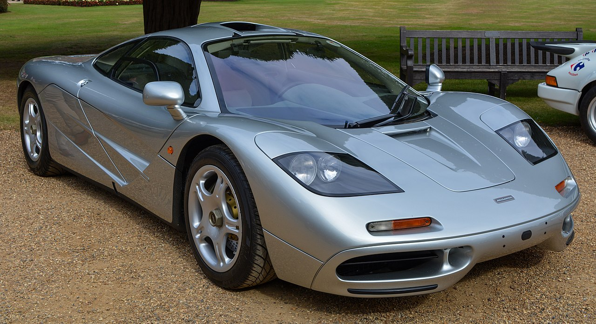

WEBCARS
F1
El McLaren F1 es un automóvil superdeportivo coupé de 2 puertas diédricas triplaza desarrollado y producido por el fabricante británico McLaren Automotive, perteneciente al Grupo McLaren, junto al equipo McLaren de Fórmula 1. Fue diseñado por Gordon Murray y Peter Stevens